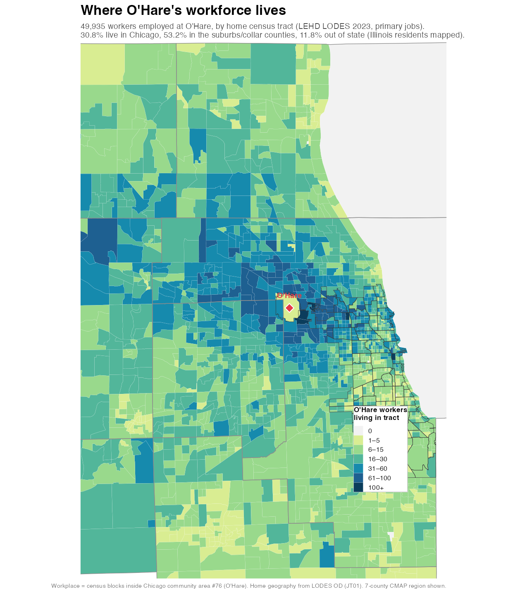
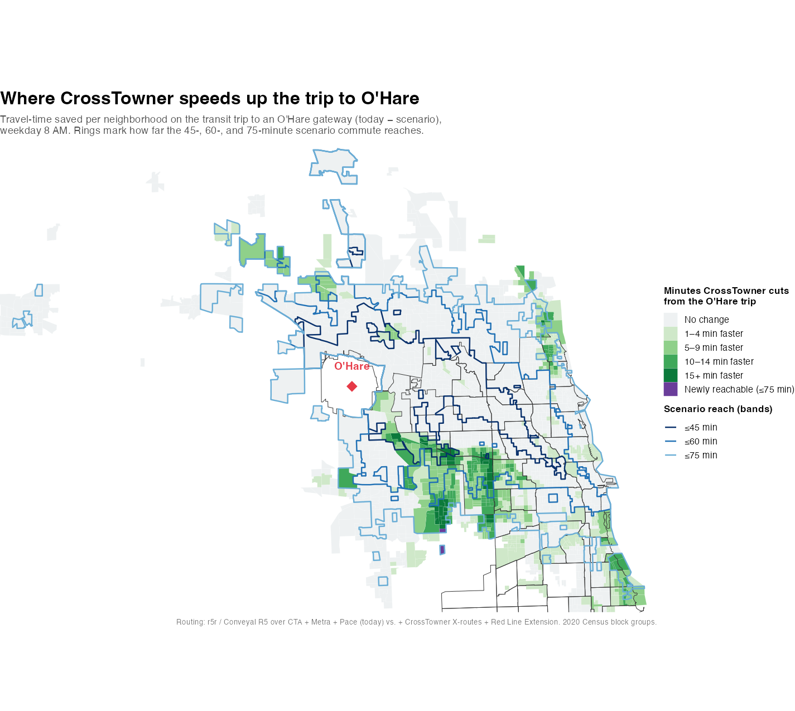

O'Hare is one of the largest job sites in Illinois — 48,921 people work there (Census LEHD LODES, 2023) — and almost none of them live nearby. I mapped where they do live, then modeled who could reach the airport by transit if the CrossTowner regional-rail tunnel were built. The short version: CrossTowner would put about 48,500 more workers within a 60-minute transit commute of O'Hare — an 8.4% bigger applicant pool. That is the strongest reason the stakeholders should back it.
O'Hare's workforce lives everywhere but O'Hare
The O'Hare community area has only about 14,400 residents8, yet the airport employs roughly 49,000. So the workforce is a regional one. Using the Census Bureau's LEHD LODES data (2023), I mapped where every O'Hare worker actually lives, by home census tract:

Only 31% of O'Hare's workers live in Chicago. More than half live in the suburbs and collar counties, and one in eight commutes from out of state:
After Chicago, the top home towns are Des Plaines, Schaumburg, Arlington Heights, Naperville, Mount Prospect, Elgin, Palatine, Aurora, and Park Ridge — classic suburb-to-airport commutes, most with no fast, direct transit to O'Hare today.
What "a bigger labor market" means, precisely
An employer can only hire from the people who can actually get to the job. Transportation researchers call this the labor shed — and it is small by transit: a Brookings study found the typical American employer can reach only about 27% of its region's workers within 90 minutes by transit.4 Widen the transit network and you mechanically widen the applicant pool.
I measured O'Hare's transit labor shed directly. Using the same Conveyal R5 routing engine that powers this site's trip planner, I computed how many employed residents can reach an O'Hare rail gateway (the Blue Line terminal or O'Hare Transfer) within 45, 60, and 75 minutes — today, and with CrossTowner plus the under-construction Red Line Extension added:
Weekday 8 AM; 7-county region; weighting each neighborhood by its number of employed residents (LODES). The 60-minute pool grows by +48,544 workers (+8.4%). Weighted by total population instead, the gain is +126,518 people (+10.1%).
Mapped, the added reach lands on the West Side — Austin and Humboldt Park — and the adjacent west and northwest suburbs: the cross-town neighborhoods the radial Blue Line was never built to serve. (The frame is cropped to the 60-minute shed, so the Far South Side, still beyond 60 minutes even with the Red Line Extension, sits off the map.)
![Map framed to the area within about 60 minutes of O'Hare by transit, with Chicago community-area outlines shown; the Far South Side, which stays beyond 60 minutes even with CrossTowner, is outside this frame. Blue block groups (reachable within 60 minutes today) form a large mass over Chicago's North and Northwest Sides, downtown, and the near-northwest and near-western suburbs. Orange block groups (added by CrossTowner and the Red Line Extension) concentrate on the West Side in Austin and Humboldt Park and the adjacent suburbs of Cicero and Berwyn, with scattered pockets in the western suburbs. Pale-grey 'beyond 60 minutes' areas include the central West Side — the Garfield Parks and Lawndale. O'Hare is a red diamond at center-left, where the airport shows as a grey notch.](img/ohare-labor-shed.png)
An honest caveat — and why it's actually the point
You might expect a new rail line to speed up the commute of everyone already working at O'Hare. It doesn't, much: most of today's transit commuters ride the 24-hour Blue Line, which CrossTowner doesn't change. Of the workers who commute by transit today, most see little time savings; a few thousand near the new corridors get a 10–20% faster trip, and about 600 gain a usable transit trip they simply don't have today.
But "little change on the Blue Line" is not the same as little benefit. Across the South and West Sides, CrossTowner cuts 5–15 minutes off the trip to O'Hare for a broad band of neighborhoods — about 173,000 employed residents get a trip at least five minutes faster. Many of those trips simply start above 60 minutes, so the catchment map above can't show them. This one can — it maps the minutes saved, with the 45-, 60-, and 75-minute scenario reach drawn as bands:

The workers who would benefit most from CrossTowner mostly don't work at O'Hare yet — because today they can't get there. They are the applicant pool, not the payroll.
That is exactly the labor-market case. Today's O'Hare workforce is shaped by today's transit map: people who can't reach the airport in a reasonable transit commute took a job somewhere else. Roughly 57% of current O'Hare workers have no realistic transit trip to the airport at all — they drive because they must. CrossTowner's value isn't shaving minutes off the Blue Line; it's turning tens of thousands of "can't get there" workers into "could work here."
The evidence that this moves hiring
- Transit share is low but responsive. Only ~4% of U.S. airport employees commute by transit — but at airports with strong, direct rail the share reaches 17% (Denver) and 19% (Seattle–Tacoma).1 Better rail visibly shifts how workers get to work.
- Commute friction drives turnover. Airport ground operations see turnover up to ~50% a year.2 When airports have cut the friction and cost on workers — the classic case being San Francisco's airport wage-and-standards program — screener turnover fell from roughly 95% to about 20%.3 A commute that's finally possible by transit is that same kind of friction, removed.
- Off-peak and cross-town trips are the gap. O'Hare runs 24/7; cargo, catering, and hotel shifts start before the first suburban train and end after the last. Late-shift workers are markedly less likely to use transit where service spans don't cover their hours.1 A circumferential regional line reaches the suburb-to-airport and cross-town trips the single radial Blue Line was never built to serve.
What a cross-town tunnel did for Heathrow
The Elizabeth line is the closest thing we have to a controlled experiment for what CrossTowner would do. London spent £18.9 billion on it — not on a bare tunnel but on a whole railway: 13 miles of new twin bore under the center of the city, ten large new and rebuilt central stations, and the systems to run them, with the fleet of 70 trains bought separately by Transport for London for roughly £1 billion more. It's a cross-town regional line, not an airport spur, that happens to reach Heathrow at its western end.5 Through-service from Heathrow straight across central London opened on 6 November 2022, and within about two and a half years the line had carried more than 500 million journeys and become the single busiest railway service in the United Kingdom.6 That's the traveler story, and it's the one that makes headlines.
The worker story is the one that matters here, and Heathrow measures it directly. The airport runs an annual Colleague Travel Survey across its 80,000-plus "Team Heathrow" employees (Heathrow Travel Report 2024, p. 14).7 The number moved: the share of airport workers driving to work alone fell from 62% in 2017 to 52% in 2024 — a ten-point drop that beat Heathrow's own 2026 target early (Fig. 4.4, p. 14). Heathrow credits it to the full opening of the Elizabeth line together with its low-emission zone and new bus services; the line by itself is only 3% of colleague trips (Fig. 4.5, p. 15), so the tunnel is one lever among several, not the whole story. Even so, ten points off a workforce that size is thousands of people who stopped driving to work.
What the Elizabeth line did clearly, and largely on its own, is enlarge the pool of people who can reach the airport at all. Heathrow's figure: the population within a 1.5-hour public-transport trip of the airport grew from 6.6 million in 2019 to 10.5 million — a 59% increase (Fig. 4.8, p. 17; calculated on spring-2025 timetable data). TfL's own job-accessibility measure put a 6% uplift on the Heathrow branch alone.6 That is the labor-shed argument, realized and measured: build the cross-town tunnel, and the number of people who can plausibly commute to the airport jumps by more than half.
And travelers switched fast. Two years after opening, the Elizabeth line already carried 13.9% of all trips to and from Heathrow — nearly matching the long-established Piccadilly line (14.4%) and roughly three times the premium Heathrow Express (4.8%) (Fig. 4.3, p. 14). Public transport's overall share of Heathrow trips rose from 39.4% in 2019 to 45.2% in 2024, hitting the 2026 target two years early (Fig. 4.2, p. 13). People will take the train to the airport — for work or for a flight — the moment it's fast, direct, and reasonably priced.
The pitch
O'Hare's own workforce data makes the case: a cross-town line is not just a convenience for travelers, it is workforce infrastructure for one of the region's largest job sites. And that job center is unusually concentrated: nearly 49,000 jobs on a single campus — on par with an entire edge city like Elgin or Joliet, and far more than any single Lake County town (Waukegan, the largest, has about 28,000). A suburb like Schaumburg posts a bigger total (~84,000 jobs) only by scattering them across dozens of separate office parks; O'Hare's sit at one hard-to-reach location — exactly the kind of concentration a single rail line can serve.10 The Chicago Department of Aviation, airlines, and O'Hare's employers should publicly support this regional rail vision. The airport already draws its workers from every corner of the region. Today most of them have to drive. A cross-town line is the best way to give people more affordable and reliable transportation options.
See what it would do for any specific trip in the CrossTowner Trip Planner, or read how these numbers are computed.
- Who works at O'Hare, and where they live: U.S. Census LEHD LODES v8.4 (2023) origin–destination files, primary jobs (one per worker). "Workplace" = the 74 on-airfield census blocks (zero residents) inside Chicago community area #76 (O'Hare), so the count is strictly on-airport jobs. LODES's 48,921 corroborates the City's "~46,000 on-airport" figure.9
- Labor shed & travel times: r5r / Conveyal R5 over present-day CTA + Metra + Pace schedules ("today") and the same plus CrossTowner's proposed X-routes and the Red Line Extension ("scenario"); weekday 8 AM, transit + walking, employed-resident weights from LODES.
- Airport people-mover: deliberately excluded — these figures measure reaching an O'Hare rail gateway, not the last leg to a specific terminal.
References
- U.S. Government Accountability Office, Accessing Airports: Available Public Transit Options and Efforts to Promote Their Use (GAO-26-107817), January 2026 — airport-employee transit mode shares (≈4% nationally; 17% Denver, 19% Seattle–Tacoma) and the effect of service-span gaps on late-shift workers. gao.gov
- International Air Transport Association (IATA), ground-operations workforce reporting, 2023 — annual turnover of up to ~50% in airport ground handling and reported qualified-staff shortages (industry-reported figures).
- UC Berkeley Labor Center — M. Reich, P. Hall & K. Jacobs, studies of the San Francisco Airport living-wage / Quality Standards Program: security-screener turnover fell from roughly 95% to about 20% following wage-and-standards reforms. laborcenter.berkeley.edu
- Brookings Institution, A. Tomer et al., Missed Opportunity: Transit and Jobs in Metropolitan America, 2011 — the typical metropolitan employer can reach ~27% of the region's workers within 90 minutes by transit. brookings.edu
- Elizabeth line (Crossrail): the project cost rose from an initial £14.8 billion to £18.9 billion by May 2022, covering the central tunnels (~42 km / 26 miles of bore — 13 miles of twin-bore route) and ten new and rebuilt central stations; the central section opened 24 May 2022 and Heathrow through-services began 6 November 2022. The fleet of 70 Class 345 trains and the Old Oak Common depot were a separate ~£1 billion contract let by Transport for London (Bombardier, February 2014; refinanced via sale-and-leaseback, 2019). Crossrail — cost & tunnels; opening timeline; Railway Gazette — train contract; TfL — rolling-stock financing.
- Transport for London, "Transformational Elizabeth line reaches 500 million passenger journeys," 10 January 2025 — more than 500 million journeys in the line's first two and a half years; "the single busiest railway service in the UK"; a 6% uplift in job accessibility on the Heathrow terminals branch. tfl.gov.uk (reprinted verbatim at RailBusinessDaily).
- Heathrow Airport Ltd, Heathrow Travel Report 2024 (Sustainable Travel Zone Annual Report, Year Three). Figures cited above by number and page: passenger public-transport mode share 39.4%→45.2% (Fig. 4.2, p. 13); 2024 passenger mode breakdown — Elizabeth 13.92%, Piccadilly 14.36%, Heathrow Express 4.76% (Fig. 4.3, p. 14); colleague single-occupancy-car 62%→52% and 80,000+ colleagues (Fig. 4.4 and text, p. 14); colleague mode breakdown, Elizabeth line 3% (Fig. 4.5, p. 15); 1.5-hour public-transport catchment 6.6m→10.5m, +59% (Fig. 4.8, p. 17). heathrow.com (direct PDF).
- Chicago Metropolitan Agency for Planning (CMAP), O'Hare Community Data Snapshot (Chicago Community Area Series) — total population 14,394 (2020–2024 American Community Survey five-year estimates). cmap.illinois.gov.
- City of Chicago, Office of the Mayor, "O'Hare International Airport Reclaims Title of Busiest Airfield in the World" (press release, 14 April 2026) — Mayor Brandon Johnson thanks "the more than 46,000 workers at O'Hare." chicago.gov (reported by WGN-TV).
- Author's analysis of U.S. Census LEHD LODES origin–destination data (2023, primary jobs), jobs aggregated by workplace to Chicago community areas and Census places: O'Hare ~49,900 (community area; 48,921 on the airfield blocks); the Loop 466,032; Schaumburg 84,366; Naperville 73,706; Joliet 50,528; Elgin 50,165; and Waukegan 28,297 (the largest job municipality in Lake County).